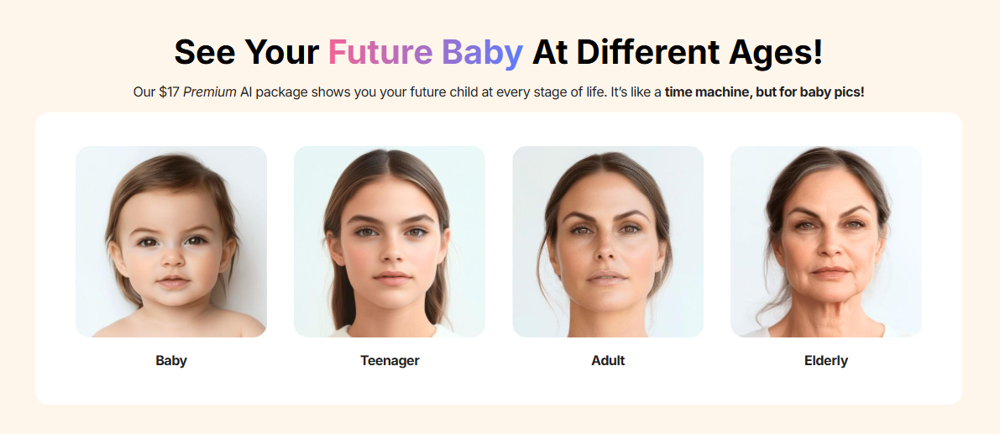

Meet your future baby (according to AI).

If you’ve ever wondered what your future child might look like, OurBabyAI is here to answer the question by doing what humans have always done, just with more pixels: it mixes two people together. You upload a “mother” photo and a “father” photo, and it generates a whole timeline of the kid those two faces could theoretically produce. It’s less “see your baby” and more “watch an algorithm average your jawlines,” then age the result from baby to elderly like it’s speedrunning a lifetime.
The pricing is where the comedy sharpens. Basic promises a 30-minute turnaround, which is adorable because image generators usually take less time than it takes to microwave leftovers. Premium costs more and gives you 32 photos total, which means you’re basically buying a tiny bundle of alternate-reality school portraits. And since you provide both faces, the real game becomes experimentation: you and your partner, you and your celebrity crush, you and your ex just to see what the universe thinks, or if you’re feeling chaotic, someone you don’t like plus a donkey to see what happens. Suddenly it’s not “family planning,” it’s “genetic photoshop roulette.”
The best part is how quickly this turns into a hobby. You start with wholesome curiosity, then you’re five minutes deep in “What if I had a baby with a fictional character?” territory, paying real money for pictures of a person who does not exist but somehow already looks like they’re about to ask for your Netflix password. It’s a modern miracle: all the fun of imagining an alternate timeline, with none of the diapers, tuition, or explaining to your friends why you just spent $17 to generate 32 photos of your hypothetical child’s entire life. If you want to try it, here it is: ourbabyai.com